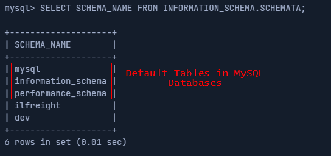

MySQL
MySQL
Documentation:
https://dev.mysql.com/doc/refman/8.0/en/information-schema-introduction.html| DB | Databases | Tables | Columns |
|---|
| MySQL | …schema_name FROM information_schema.schemata | …table_name FROM information_schema.tables | …column_name FROM information_schema.columns |
• Databases → SELECT schema_name FROM information_schema.schemata
◇ This query give use the databases that are available on the DBMS. This table is in the is the SCHEMATA table
 Note: The first three databases are default MySQL databases and are present on any server, so we usually ignore them during DB enumeration.
Sometimes there's a fourth 'sys' DB as well.
• Tables → SELECT table_name FROM information_schema.tables
• Columns → SELECT column_name FROM information_schema.columns